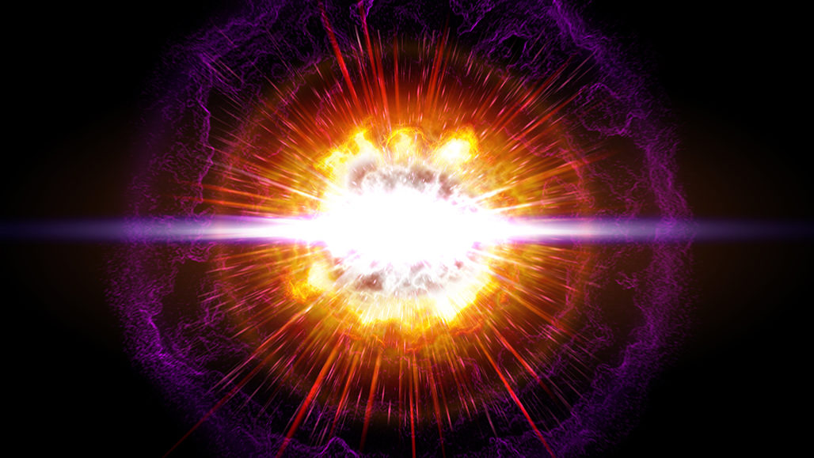

A supernova is a powerful and luminous stellar explosion. This transient astronomical event occurs during the last evolutionary stages of a massive star or when a white dwarf is triggered into runaway nuclear fusion. The original object, called the progenitor, either collapses to a neutron star or black hole, or is completely destroyed. The peak optical luminosity of a supernova can be comparable to that of an entire galaxy before fading over several weeks or months.The most recent directly observed supernova in the Milky Way was Kepler's Supernova in 1604, but the remnants of more recent supernovae have been found. Observations of supernovae in other galaxies suggest they occur in the Milky Way on average about three times every century.


Supernova